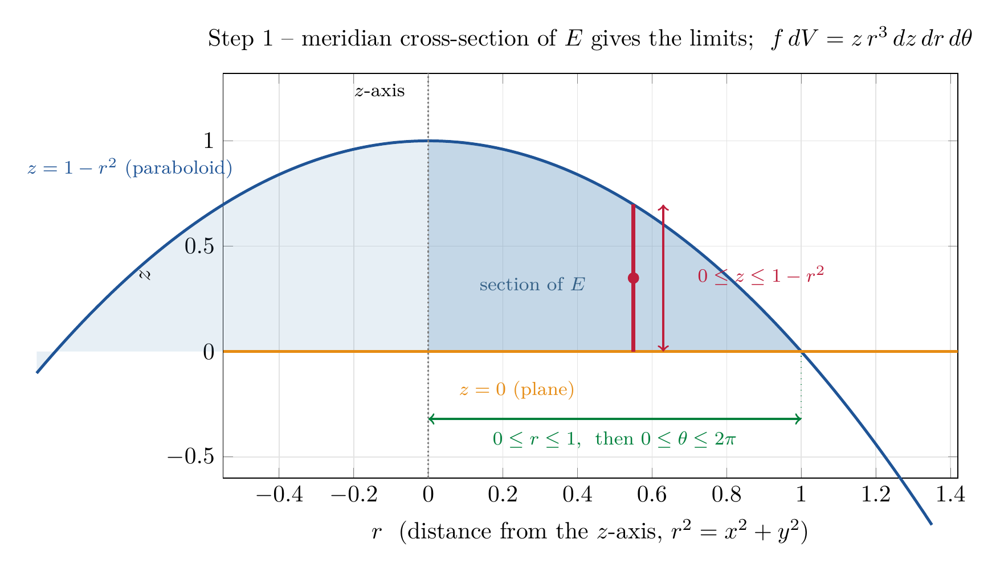

Please solve the problem in the following image.
(Image `20260928_013335_250560_utc_0800_0.png`. Alt text: Image: human_20260928_013335_250560_utc_0800)
20260928_013335_250560_utc_0800_0.png
End of problem
Answer
## Average value of $f(x,y,z)=x^2z+y^2z$ over the paraboloid solid
**Definition to use.**
$$
f_{\text{ave}}=\frac{1}{V(E)}\iiint_E f(x,y,z)\,dV,\qquad V(E)=\iiint_E 1\,dV
$$
So the job is really **two** triple integrals over the *same* region: the volume $V(E)$ and the moment $\iiint_E f\,dV$. Everything else is bookkeeping.
---
### Step 1 — Understand the region and pick coordinates
$E$ is bounded **above** by the paraboloid $z=1-x^2-y^2$ and **below** by the plane $z=0$. Since $z\ge 0$ forces $1-x^2-y^2\ge 0$, the shadow of $E$ in the $xy$-plane is the unit disk $x^2+y^2\le 1$.
Both the solid and the function are rotationally symmetric about the $z$-axis, and $f$ contains the combination $x^2+y^2$. That is the classic signal to use **cylindrical coordinates**:
$$
x=r\cos\theta,\quad y=r\sin\theta,\quad z=z,\qquad dV=r\,dz\,dr\,d\theta
$$
$$
E=\{(r,\theta,z):\ 0\le\theta\le 2\pi,\ 0\le r\le 1,\ 0\le z\le 1-r^2\}
$$
Crucially, the integrand simplifies beautifully:
$$
f=x^2z+y^2z=z\,(x^2+y^2)=z\,r^2\quad\Longrightarrow\quad f\,dV=(z\,r^2)\,r\,dz\,dr\,d\theta=z\,r^3\,dz\,dr\,d\theta
$$
(The two plots of this step show the solid in 3D and its meridian cross-section, from which the limits $0\le z\le 1-r^2$, $0\le r\le 1$ are read off directly.)
---
\documentclass[border=8pt]{standalone}
\usepackage{xcolor}
\definecolor{deepblue}{RGB}{31,84,150}
\definecolor{steel}{RGB}{70,130,180}
\definecolor{crimsonred}{RGB}{190,30,60}
\definecolor{darkorang}{RGB}{230,140,20}
\definecolor{seagreen}{RGB}{0,128,60}
\usepackage{pgfplots}
\pgfplotsset{compat=1.18}
\begin{document}
\begin{tikzpicture}
\begin{axis}[
width=12.5cm, height=7.6cm,
xmin=-0.55, xmax=1.42, ymin=-0.60, ymax=1.32,
xlabel={$r$ \ (distance from the $z$-axis, $r^2=x^2+y^2$)},
ylabel={$z$},
grid=major, grid style={gray!22},
title={Step 1 -- meridian cross-section of $E$ gives the limits; \ $f\,dV=z\,r^{3}\,dz\,dr\,d\theta$},
every title/.append style={font=\small},
clip=false,
]
% --- mirrored half of the section (light) -----------------------------------
\addplot[fill=steel, opacity=0.13, draw=none, domain=-1.05:0, samples=80] {1-x^2} \closedcycle;
% --- shaded region 0 <= r <= 1, 0 <= z <= 1 - r^2 ---------------------------
\addplot[fill=steel, opacity=0.32, draw=none, domain=0:1, samples=80] {1-x^2} \closedcycle;
% --- paraboloid profile ------------------------------------------------------
\addplot[deepblue, very thick, domain=-1.05:1.35, samples=120] {1-x^2};
% --- plane z = 0 -------------------------------------------------------------
\addplot[darkorang, very thick, domain=-0.55:1.42, samples=2] {0};
% --- direct labels -----------------------------------------------------------
\node[deepblue, font=\footnotesize, anchor=south east] at (-0.50,0.78)
{$z=1-r^2$ (paraboloid)};
\node[darkorang, font=\footnotesize, anchor=north west] at (0.06,-0.10)
{$z=0$ (plane)};
\node[steel!75!black, font=\footnotesize, align=center] at (0.28,0.32)
{section of $E$};
% --- z-axis ------------------------------------------------------------------
\draw[gray, thick, densely dotted] (0,-0.60) -- (0,1.32);
\node[font=\footnotesize, anchor=east] at (-0.04,1.24) {$z$-axis};
% --- vertical element at r0 = 0.55 ------------------------------------------
\draw[crimsonred, ultra thick] (0.55,0) -- (0.55,0.6975);
\fill[crimsonred] (0.55,0.3488) circle (2.4pt);
\draw[<->, crimsonred, thick] (0.63,0) -- (0.63,0.6975);
\node[crimsonred, font=\footnotesize, align=left, anchor=west] at (0.70,0.36)
{$0\le z\le 1-r^2$};
% --- r-range arrow -----------------------------------------------------------
\draw[<->, seagreen, thick] (0,-0.32) -- (1,-0.32);
\draw[seagreen, dotted, thin] (1,-0.32) -- (1,0);
\node[seagreen, font=\footnotesize, anchor=north] at (0.5,-0.34)
{$0\le r\le 1$, \ then $0\le\theta\le 2\pi$};
\end{axis}
\end{tikzpicture}
\end{document}

pgfplots_1.png
---
---
### Step 2 — The volume $V(E)$ (the denominator)
Integrate from the inside out: first $z$ along a vertical element, then $r$, then $\theta$.
$$
V(E)=\int_0^{2\pi}\int_0^1\int_0^{1-r^2} r\,dz\,dr\,d\theta
=\int_0^{2\pi}d\theta\int_0^1 r\bigl(1-r^2\bigr)\,dr
$$
The radial integral (substitute $u=1-r^2$, $du=-2r\,dr$):
$$
\int_0^1 r(1-r^2)\,dr=\left[\frac{r^2}{2}-\frac{r^4}{4}\right]_0^1=\frac12-\frac14=\frac14
$$
so
$$
V(E)=2\pi\cdot\frac14=\frac{\pi}{2}
$$
This agrees with the known formula for a paraboloid cap, $V=\tfrac12(\pi R^2)H=\tfrac12\pi\cdot1\cdot1$.
---
### Step 3 — The integral of $f$ (the numerator)
$$
I=\iiint_E f\,dV=\int_0^{2\pi}\int_0^1\int_0^{1-r^2} z\,r^3\,dz\,dr\,d\theta
$$
**Inner ($z$):** $\displaystyle\int_0^{1-r^2} z\,dz=\frac{(1-r^2)^2}{2}$, so
$$
I=2\pi\int_0^1 \frac{r^3(1-r^2)^2}{2}\,dr=\pi\int_0^1 r^3\left(1-r^2\right)^2dr
$$
**Radial integral** with $u=1-r^2\;(\Rightarrow r^2=1-u,\ r\,dr=-\tfrac{du}{2})$:
$$
\int_0^1 r^3(1-r^2)^2dr=\int_0^1 r^2(1-r^2)^2\,r\,dr
=\frac12\int_0^1(1-u)u^2\,du=\frac12\left[\frac{u^3}{3}-\frac{u^4}{4}\right]_0^1
=\frac12\left(\frac13-\frac14\right)=\frac{1}{24}
$$
Therefore
$$
I=\frac{\pi}{24}
$$
*(Expanding instead gives the same value: $\int_0^1(r^3-2r^5+r^7)\,dr=\frac14-\frac13+\frac18=\frac{1}{24}$.)*
---
### Step 4 — Form the ratio
$$
f_{\text{ave}}=\frac{I}{V(E)}=\frac{\pi/24}{\pi/2}=\frac{2}{24}=\frac{1}{12}
$$
$$
f_{\text{ave}}=\frac{1}{12}\approx 0.0833
$$
---
### Step 5 — Sanity checks (why this answer is trustworthy)
1. **The $2\pi$ and $\pi$ cancel.** Because nothing depends on $\theta$, the average can be computed from the *radial* integrals alone — a useful shortcut and a built-in error detector:
$$
f_{\text{ave}}=\frac{\int_0^1\int_0^{1-r^2} z\,r^3\,dz\,dr}{\int_0^1\int_0^{1-r^2} r\,dz\,dr}
=\frac{1/48}{1/4}=\frac{1}{12}\quad\checkmark
$$
2. **Independent Cartesian evaluation** of both integrals over $-1\le x\le1$, $-\sqrt{1-x^2}\le y\le\sqrt{1-x^2}$, $0\le z\le1-x^2-y^2$ returns $V=\pi/2$ and $I=\pi/24$ — identical.
3. **Monte Carlo estimate** (300{,}000 random points in the box $[-1,1]^2\times[0,1]$): $V\approx1.574$ vs. $\pi/2=1.5708$; $I\approx0.1314$ vs. $\pi/24=0.1309$; ratio $\approx0.0835$ vs. $1/12=0.08333$ — agreement to $\sim10^{-3}$.
4. **Size plausibility.** On $E$ we have $0\le z\le1$ and $0\le r\le1$, hence $0\le f=z\,r^2\le1$. The function is large only where both $z$ and $r$ are moderate (mid-height, mid-radius), while near the rim $r\to1$ we have $z\to0$ and near the peak $z\to1$ we have $r\to0$. So a modest average like $1/12$ is exactly what one should expect.
---
### How to solve any problem of this type
| Step | What to do |
|---|---|
| 1 | Sketch $E$; find its projection. Choose the coordinate system matching the symmetry (here cylindrical, because $x^2+y^2$ appears). |
| 2 | Rewrite $f$ in the new variables and **never forget the Jacobian factor** ($r$ for cylindrical, $\rho^2\sin\phi$ for spherical). |
| 3 | Compute $V(E)$ — treat it as the special case $f\equiv1$. |
| 4 | Compute $\iiint_E f\,dV$, integrating inside-out. |
| 5 | Divide, simplify, and check magnitude/symmetry. |
**Answer:**
$$
\boxed{f_{\text{ave}}=\dfrac{1}{12}}
$$